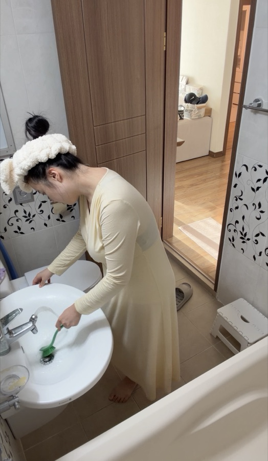
장면 1① 도입 훅
화면 연출
세면대 앞, 화장실 청소를 하는 아내
대사
아내: 여보 ~ 세면대 물 또 안내려가 ㅠㅠ
POSITI CREATIVE STUDIO · 포지티 크리에이티브 스튜디오
가이드라인 문구가 실제 대화에서 자연스럽게 나오는지, 크리에이터 부부가 직접 테스트 촬영을 해 보며 다듬은 콘티입니다. 두 버전 중 하나를 골라 주세요.
아내가 배수구를 청소하는데 남편이 옆에서 계속 참견하다가, 결국 남편이 청소를 떠안게 되는 흐름 · 장면 14개

세면대 앞, 화장실 청소를 하는 아내
아내: 여보 ~ 세면대 물 또 안내려가 ㅠㅠ
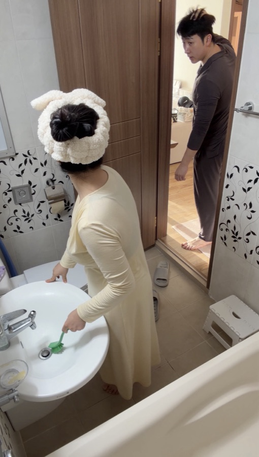
문 앞, 바라보며 참견하려다 쫓겨나가는 남편
💙남편 : 또 막혔어? 아내 : 엉ㅠㅠ 내가 해볼께
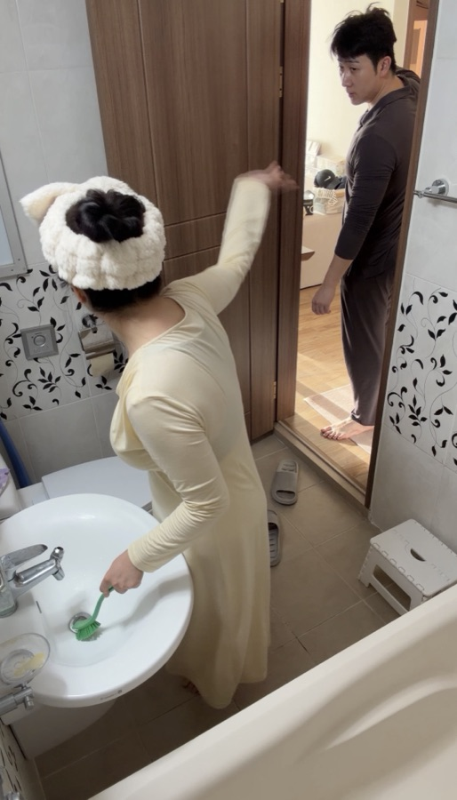
아내가 배수구 청소 솔과 헤어캐처를 든 손을 저으며 "아 진짜" 하는 듯한 리액션. 남편은 문 앞에서 지켜본다.
💙남편 : (못마땅) 여보 아직도 해? 아내 : 여보 나 알아서 잘 해~
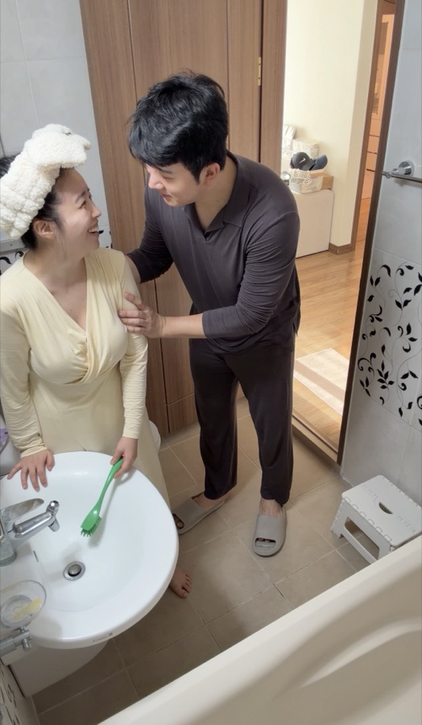
남편이 아내 어깨에 손을 얹고 둘이 마주 보며 웃는 투샷. 아내는 배수구 청소솔과 헤어캐처를 든 채 세면대를 짚고 있다.
💙남편 : 청소를 해봤어야 알지~ 그걸 왜 빼고 있어? 아내 : 뭐~~ 아 문닫고 나가
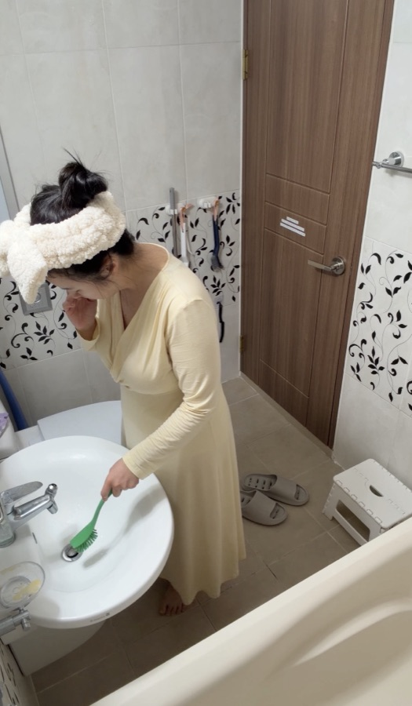
아내가 허리를 숙여 초록 배수구 솔과 헤어캐처를 들고 배수구를 솔질한다. 남편은 화면 밖이고 목소리만 들린다.
(닫힌 문) 💙남편 : (문밖에서) 여보, 이거 붓고 잠깐 기다려 보자. 이걸로 해보자.
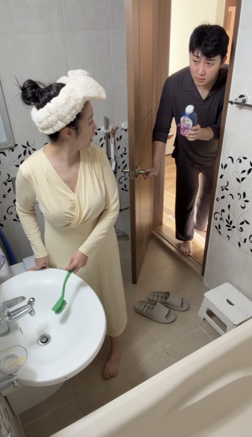
남편이 문 앞에서 울트라겔 병을 들고 못마땅한 얼굴로 묻는다. 아내는 초록 솔과 헤어캐처를 든 채 돌아본다.
아내 : 뭐~?? 아 진짜 (문열고) 왜~~~
💙남편 : 여보는 늘 그렇더라. 굳이 굳이 돌아가지를 마~~ 이거 부으면 되는데 왜 그러고 있어~ 아내 : (웃음 리액션)ㅋㅋㅋㅋㅋㅋㅋㅋㅋㅋㅋㅋㅋㅋ
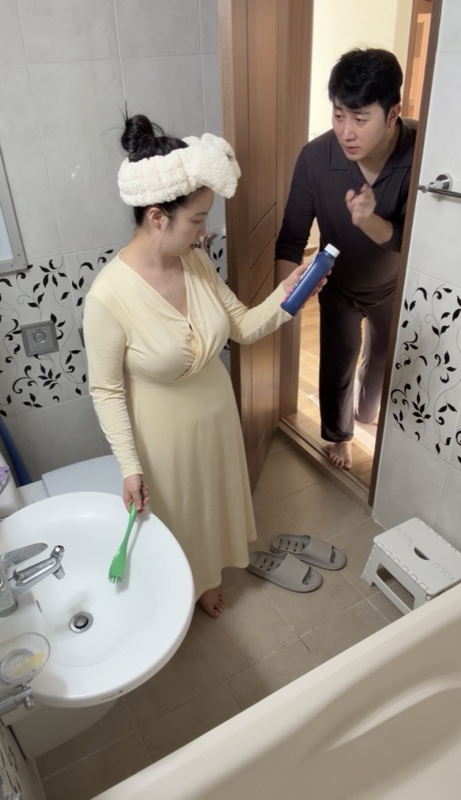
아내가 울트라겔 병을 들고 세면대 쪽을 본다. 남편은 문 앞에서 손짓. 병 라벨이 정면으로 보이게.
아내 : 이걸 부으라고? 그냥 부으면 돼 ?
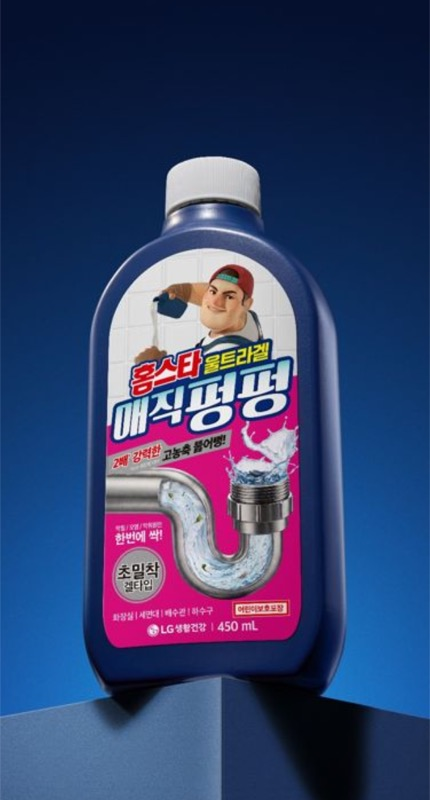
💙남편 : 꽉 막혔으면 이거 다 붓고, 막힘이나 오염 방지는 100ml면 돼.
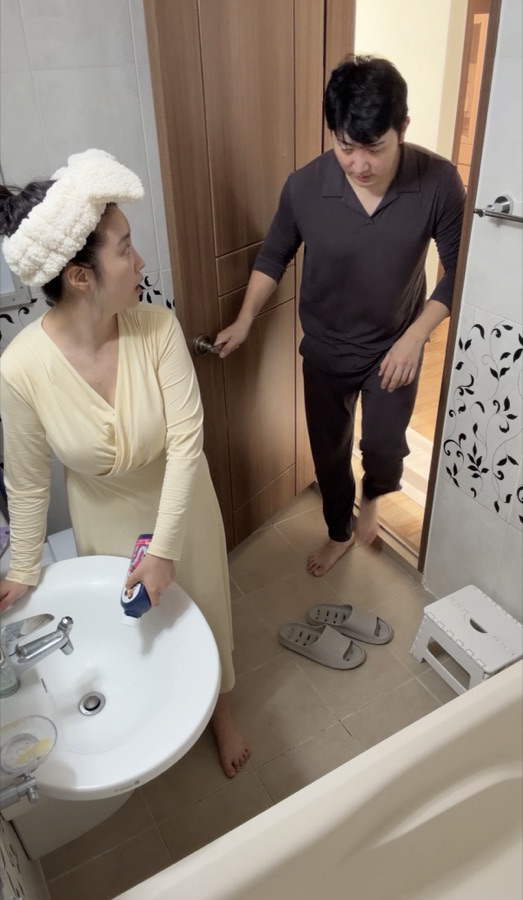
아내가 병을 든 채 세면대 앞에 서 있고, 남편은 문 앞에서 설명하듯 말한다.
💙남편 : 신기한게...이거 겔로 되어있다? 천천히 흘러서 안쪽까지 내려가. 보여줄까?
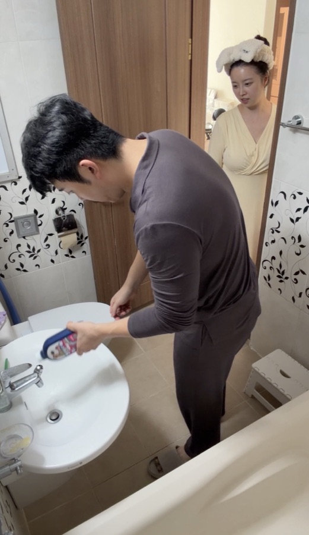
남편의 말을 끊으며 말하는 수경
여보...그냥 여보가 해ㅋㅋㅋ
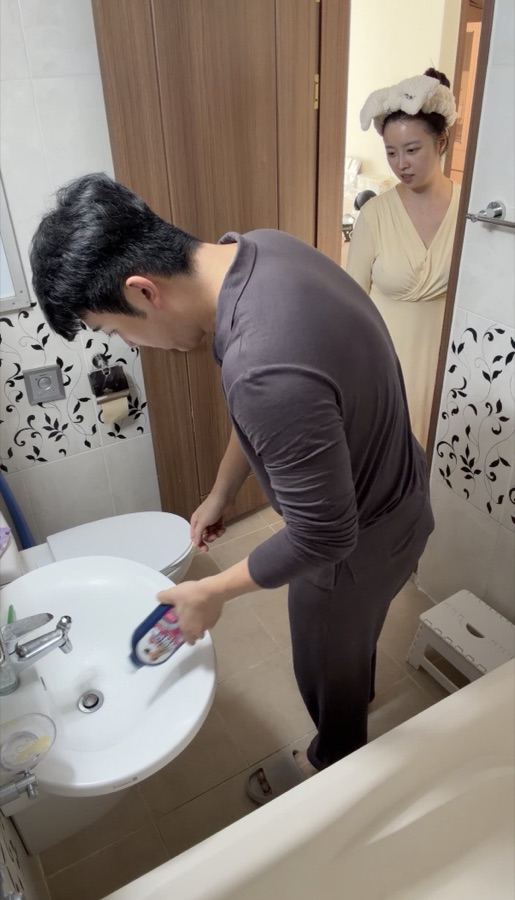
나서는 남편 / 남편이 세면대를 솔로 닦는 중, 옆에 병이 보이고 아내는 문가에서 지켜본다.
💙남편 : 청소를 할때는 앙? 이런거 제일 먼저 부어두고 기다리면서 다른데 청소하는거야~
가만히 제품 보는 아내
여보 근데 이거 부식방지제가 들어 있어가지구 하수구랑 싱크대에도 써도 괜찮다는데?
아내 : 청소 하는김에 더해라 여보 주방이랑 안방화장실이랑 💙남편 :예??....(마무리)
남편이 화장실 청소를 하고, 아내가 옆에서 제품을 소개하는 흐름 · 장면 12개
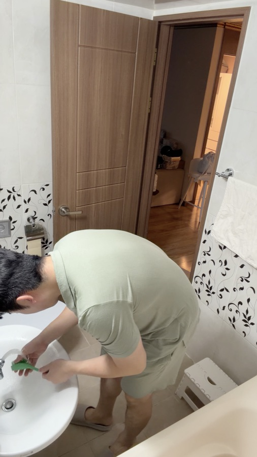
세면대 앞에서 남편이 솔로 배수구를 힘겹게 닦는다. 옆이나 뒤에서 허리 높이로 잡는다.
💙남편: 배수구 왜 이렇게 안 내려가냐…
제목 : 화장실 청소의 날
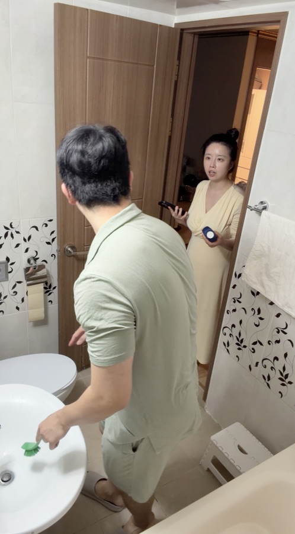
문가에서 아내가 [제품]을 들고 들어온다. 문틀을 프레임 안에 넣어 자연스럽게.
아내: 배수구 청소 내가할께~~여보!
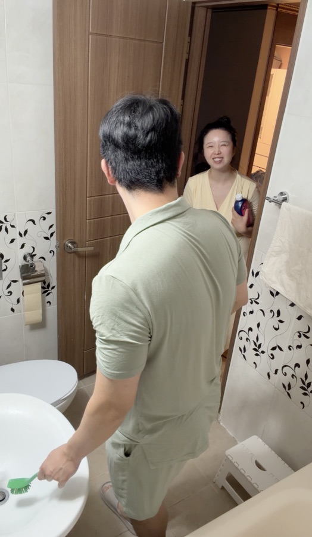
남편이 돌아보며 놀라는 리액션
💙남편: 오~~왠일?
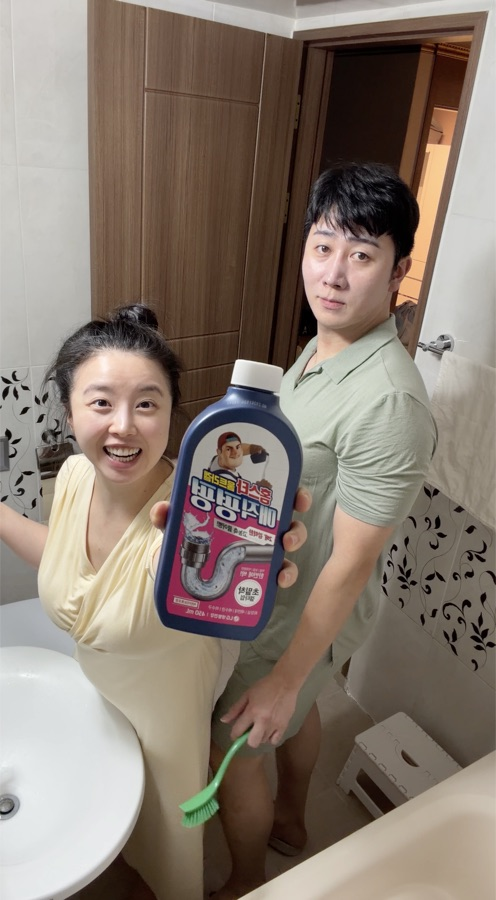
아내가 병 라벨이 보이게 들고 미소 짓는다. 어이없는 표정의 남편
아내: 내가 사놓은게 있어서 홈스타 매직펑펑 울트라겔!
홈스타 매직펑펑 울트라겔 · 450ml
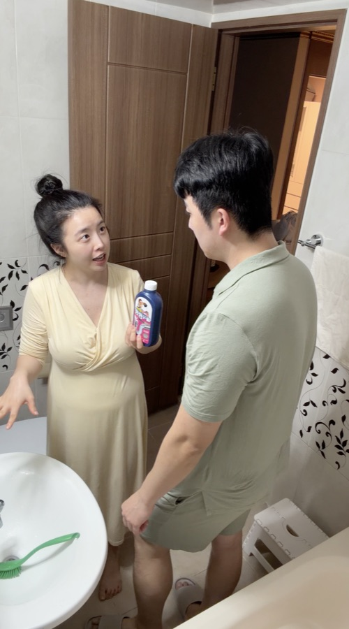
(별도 촬영 예정) 병을 천천히 기울여 겔이 컵 벽을 타고 흘러내리는 매크로. 성인이 장갑을 끼고 시연.
아내: 막힌데 한통 부으면 되는데,
꽉 막힌 곳 한 통 전량 / 막힘·오염 방지 100ml
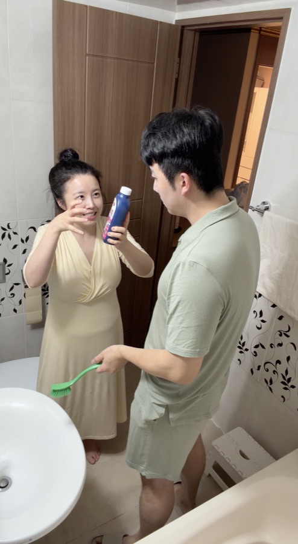
홈쇼핑 쇼호스트처럼 야무지게 설명하는 아내
아내: 이게 겔이라는게 포인트라는거야. 천~천히 흐른다는거지~ 그동안 배관 오염에 흡착하면서 분해하는 그런 원리~ 너무 잘샀지?
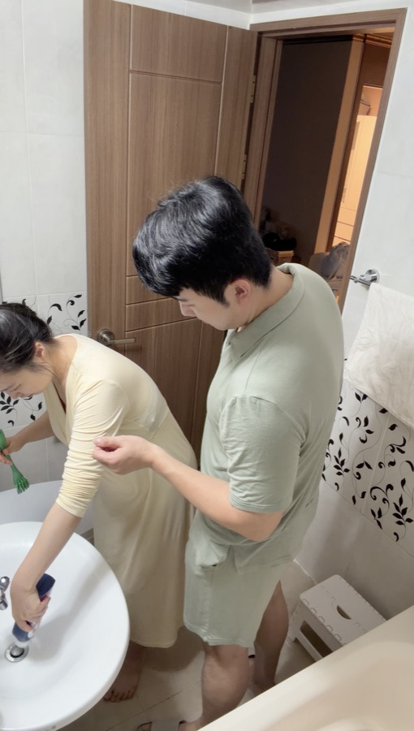
말로 홀린 뒤, 제품 배수구에 붓고 → 청소 끝이라는 뻔뻔한 모습
아내 : 자 내가 배수구 청소를 시작해볼게 ~끝! 💙남편 : ????
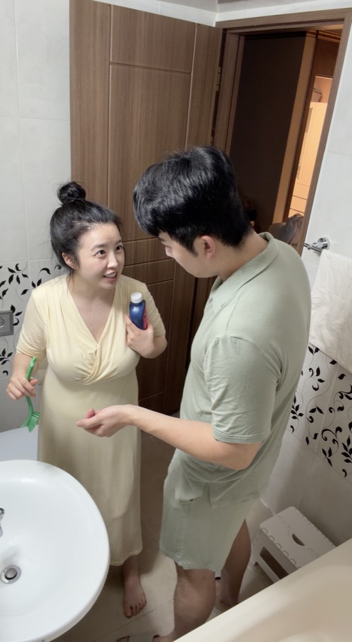
남편을 보고 애교스럽게 보며
아내: 여보 ! 이거 붓고 기다리는 동안 여보가 다른 거 청소하면 되겠다.
남편 : ???
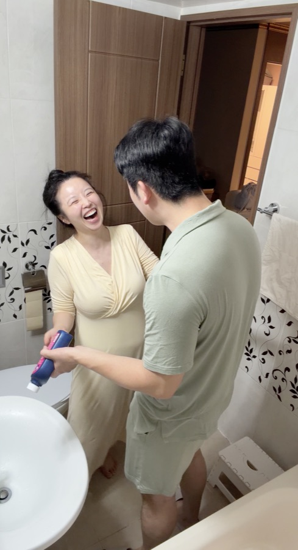
빵터지는 아내
💙남편 : 뭔가 이상한데? 여보는 그냥 붓고 끝난거같은데? 아내 : ㅋㅋㅋㅋㅋㅋㅋㅋㅋㅋ왜 나도 이거 했잖아 붓는거 이것도 청소잖아
남편과 아내가 서로 웃는다
아내: 우리 집 욕실 관리템, 내가 찾았다는 그 자체가 엄청난 일이잖아~
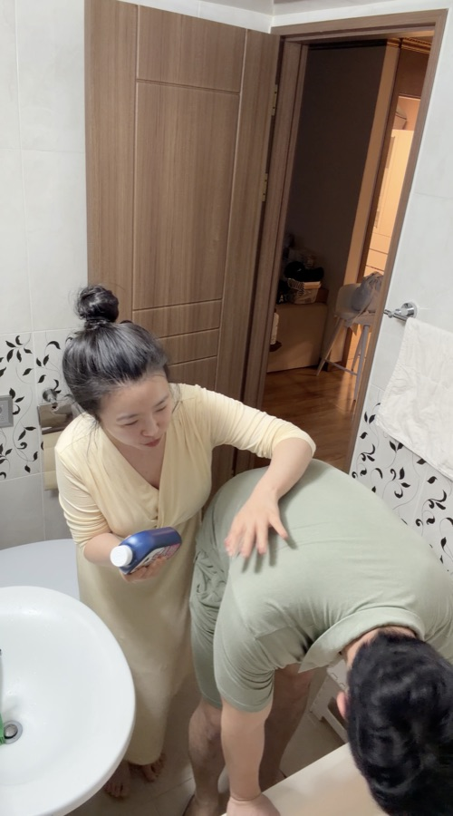
아내 말듣고 마저 다른 곳 청소하는 남편
💙남편: ㅋㅋㅋ알겠어 여보 고마워~
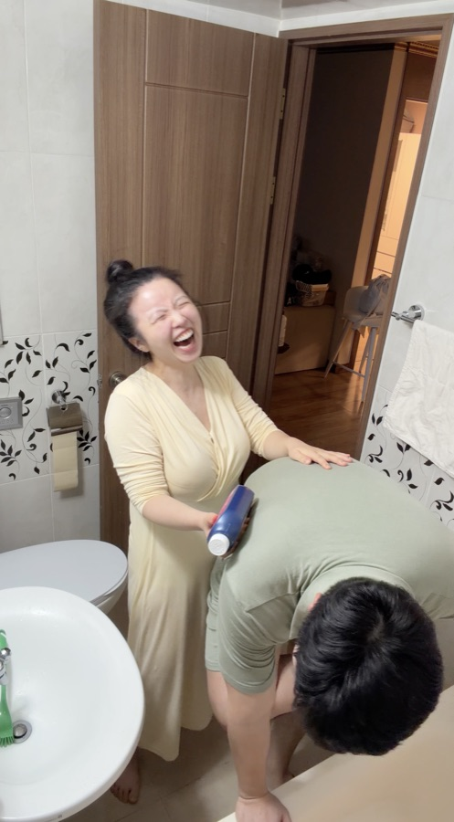
은근히 다른 일을 시키는 아내
아내 : 여보 이거 부식방지제 들어가있어서 세면대, 싱크대, 배수구 같이 청소할수있다? 아내 : 하는김에 주방이랑 안방도 해줘~ 💙남편 : 예? (마무리)